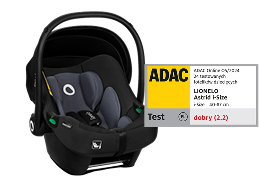
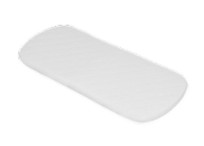
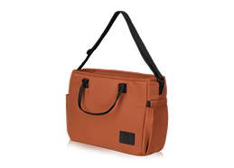
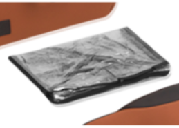
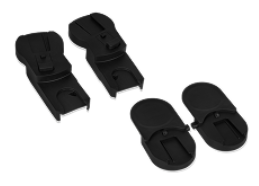
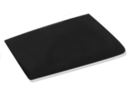
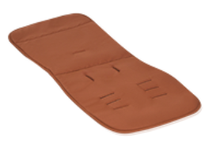
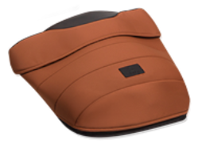
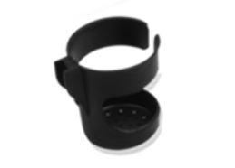

Linelo Layla
Wasz pierwszy i jedyny wózek
Wygodny tak dla noworodków, jak i dla 4-latków; z poszerzoną gondolą i wydłużonym siedziskiem. Idealny, gdy szukacie uniwersalnego i praktycznego wózka na lata.
Cechy szczególne
Wjedziecie wszędzie
Gondola składa się na płasko, co oszczędza miejsce w domu, a spacerówkę można szybko i wygodnie złożyć także wtedy, gdy znajduje się w niej siedzisko – nie trzeba go zdejmować!
Dopasowuje się do wzrostu rodzica
Gondolę można umieścić niżej lub wyżej, za pomocą adapterów. To pomocne, gdy rodzice różnią się wzrostem. Znaczne udogodnienie dla wyższych opiekunów i ich pleców.
Wjedziecie wszędzie
Zwrotny w mieście, znakomicie radzi sobie na polnej drodze czy w lesie, bo ma duże, gumowe koła all-terrain z głębokim bieżnikiem i podwójną amortyzację.
Wjedziecie wszędzie
Gondola składa się na płasko, co oszczędza miejsce w domu, a spacerówkę można szybko i wygodnie złożyć także wtedy, gdy znajduje się w niej siedzisko – nie trzeba go zdejmować!
Szczegóły produktu
Rozwiązania smart ułatwiają każdy spacer
Codzienna obsługa jest prostsza! Np. przy uchwycie znajdziesz haczyki na torbę, pokrowiec gondoli ma podwójny zamek, a kosz – praktyczny organizer.
Błyskawiczne przygotowanie do podróży
5-punktowe pasy z nakładkami zapobiegającymi obtarciom szybko zapina się na magnetyczną klamrę. To każdorazowa oszczędność czasu i nerwów.
Latem przewiewnie i bez pocenia
Regulowana magnesami wentylacja 3D i oddychający materacyk AiryDots zapewniają optymalny przepływ powietrza, także pod pleckami. Zapobiegając poceniu, zapobiegamy potówkom.
Obsługujesz 1 ręką
Przyciski funkcyjne „zapamiętują” ostatnie położenie, dzięki czemu 1 ręka wystarczy, by wyjąć gondolę, przełożyć siedzisko czy rozłożyć budkę. Ograniczenie zbędnych ruchów minimalizuje ryzyko wybudzenia dziecka.
Łatwiej zasnąć
Oparcie w spacerówce jest regulowane aż do pozycji „na płasko”. To idealna pozycja do drzemki, co pomaga przyspieszyć zasypianie.
Wjedziecie wszędzie
Zwrotny w mieście, znakomicie radzi sobie na polnej drodze czy w lesie, bo ma duże, gumowe koła all-terrain z głębokim bieżnikiem i podwójną amortyzację.
Dodatkowo w zestawie

Fotelik Astrid i-Size
Nosidło Astrid i-Size z certyficatem ADAC można wpiąć w stelaż wózka! Gdy podczas podróży autem maluszek zaśnie, można go przetransportować dalej bez wybudzania.

Piankowy materac
Oddychający (technologia AiryDots), odpowiednio twardy, zapewnia optymalne podparcie kręgosłupa dziecka. Wykonany z pianki T25.

Torba dla rodzica
Smoczki, chusteczki, akcesoria... Wszystko masz pod ręką i w najlepszym porządku.

Folia przeciwdeszczowa
Zakładana na gondolę i spacerówkę, skutecznie chroni przed deszczem i śniegiem.

Adaptery do gondoli i fotelika
Decydujesz, czy gondola ma być wyżej, czy niżej. To wygodny dostęp do dziecka i brak bólu pleców.

Moskitiera
Insekty nie mają dostępu do dziecka, chronionego przez przewiewną siatkę.

Wkładka spacerówki
Adjustable to 5 different positions for extra comfort whether playing or napping. You can also fold it away for when your toddler no longer needs it.

Ocieplacz na nóżki
Features high quality fabric and extra padded cushioning for your growing baby’s comfort.

Uchwyt na kubek
Bo zasługujesz na gorącą kawę podczas spaceru.